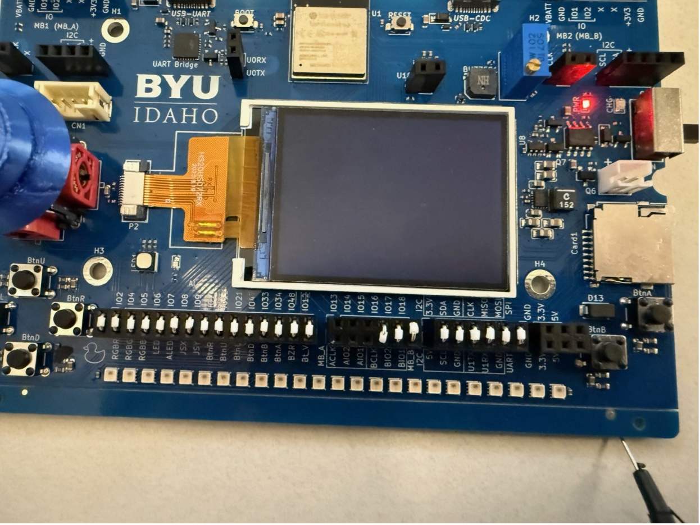
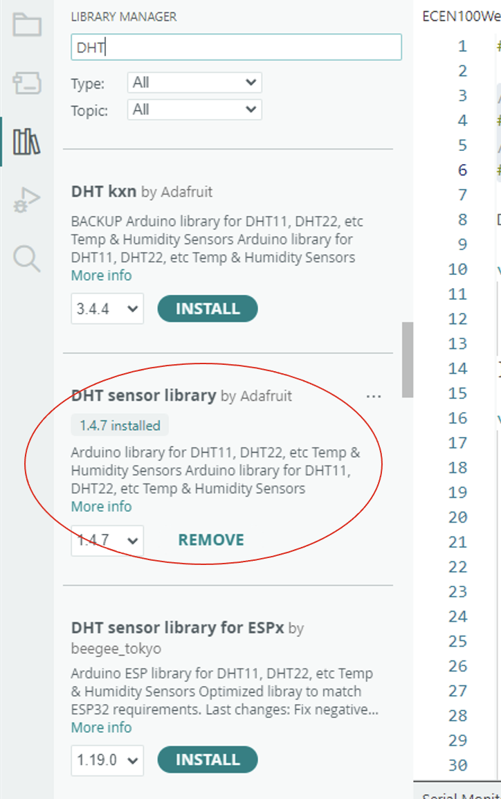
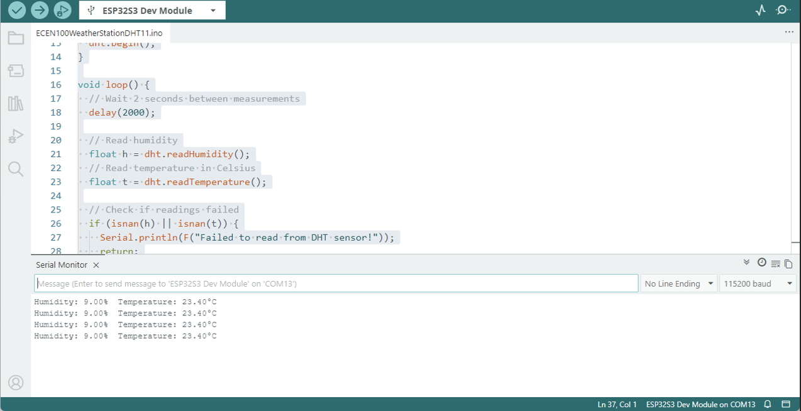

What you'll learn
- ✓ How to wire a DHT11 temperature and humidity sensor to your board
- ✓ How to read and interpret sensor data using Arduino code
- ✓ How to view live readings in the Serial Monitor
- ✓ How to push those readings onto the ST7789 display screen
Hardware needed
DHT11 Sensor
Measures both temperature and humidity. One is included in your kit.
ESP32 or Arduino
Your main development board. Either works; pin numbers may vary.
Jumper wires
Three wires: GND, power, and signal. That's all the DHT11 needs.
ST7789 Screen
Optional — for displaying readings without opening the Serial Monitor.
Wiring the DHT11
The DHT11 is very easy to connect. It only needs three connections — connect GND and 3.3V to the Power section of the header pins on your development board, and the signal pin to pin 13.

Simple Arduino sketch
This sketch reads humidity and temperature every 2 seconds and prints them to the Serial Monitor. Copy it in, upload, and open the monitor at 115200 baud.
#include "DHT.h" // Define GPIO pin connected to the DHT sensor #define DHTPIN 13 #define DHTTYPE DHT11 DHT dht(DHTPIN, DHTTYPE); void setup() { Serial.begin(115200); Serial.println(F("DHT11 Test")); dht.begin(); } void loop() { // Wait 2 seconds between measurements delay(2000); float h = dht.readHumidity(); float t = dht.readTemperature(); if (isnan(h) || isnan(t)) { Serial.println(F("Failed to read from DHT sensor!")); return; } Serial.print(F("Humidity: ")); Serial.print(h); Serial.print(F("% Temperature: ")); Serial.print(t); Serial.println(F("°C")); }
Once uploaded, open the Serial Monitor. You should see humidity and temperature readings appearing every two seconds.

Displaying data on the ST7789 screen
You can push the temperature reading directly onto the screen built into your development board. Start with this quick test to confirm the display is working, then move to the full integrated sketch below.
Step 1 — Display test
#include <Adafruit_GFX.h> #include <Adafruit_ST7789.h> #include <SPI.h> // Pin definitions for ESP32-S3 (adjust if using different pins) #define TFT_CS 0 #define TFT_RST 1 #define TFT_DC 45 #define TFT_MOSI 3 #define TFT_SCLK 46 #define TFT_MISO 10 Adafruit_ST7789 tft = Adafruit_ST7789(TFT_CS, TFT_DC, TFT_RST); void setup() { SPI.begin(TFT_SCLK, TFT_MISO, TFT_MOSI); tft.init(240, 320); Serial.begin(115200); tft.setRotation(1); tft.fillScreen(ST77XX_BLACK); tft.setCursor(60, 100); tft.setTextColor(ST77XX_GREEN); tft.setTextSize(3); tft.println("Setup"); delay(1000); tft.fillScreen(ST77XX_BLACK); } void loop() { tft.setCursor(60, 100); tft.setTextColor(ST77XX_GREEN); tft.setTextSize(3); tft.println("Loop"); delay(1000); tft.fillScreen(ST77XX_BLACK); }
Step 2 — Integrated DHT11 + display
#include <Adafruit_GFX.h> #include <Adafruit_ST7789.h> #include <SPI.h> #include "DHT.h" // Display pins for ESP32-S3 #define TFT_CS 0 #define TFT_RST 1 #define TFT_DC 45 #define TFT_MOSI 3 #define TFT_SCLK 46 #define TFT_MISO 10 // DHT sensor #define DHTPIN 13 #define DHTTYPE DHT11 Adafruit_ST7789 tft = Adafruit_ST7789(TFT_CS, TFT_DC, TFT_RST); DHT dht(DHTPIN, DHTTYPE); void setup() { SPI.begin(TFT_SCLK, TFT_MISO, TFT_MOSI); dht.begin(); tft.init(240, 320); Serial.begin(115200); tft.setRotation(1); tft.fillScreen(ST77XX_BLACK); tft.setCursor(60, 100); tft.setTextColor(ST77XX_GREEN); tft.setTextSize(3); tft.println("Setup"); delay(1000); tft.fillScreen(ST77XX_BLACK); } void loop() { tft.fillScreen(ST77XX_BLACK); float t = dht.readTemperature(); tft.setCursor(60, 100); tft.setTextColor(ST77XX_GREEN); tft.setTextSize(3); tft.println("Temperature"); tft.setCursor(60, 140); if (isnan(t)) { tft.println(F("Read Failed")); return; } else { tft.println(t); } delay(1000); }
Upload this sketch and you should see the live temperature reading updating on the screen every second. If the read fails, the screen will show "Read Failed" instead of crashing.
